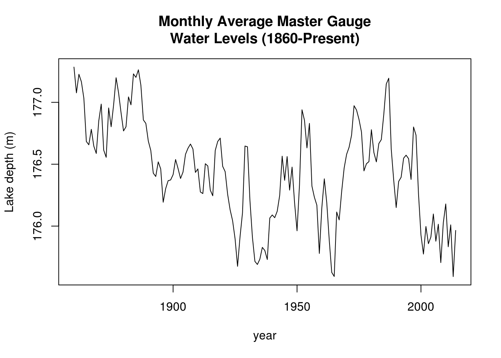
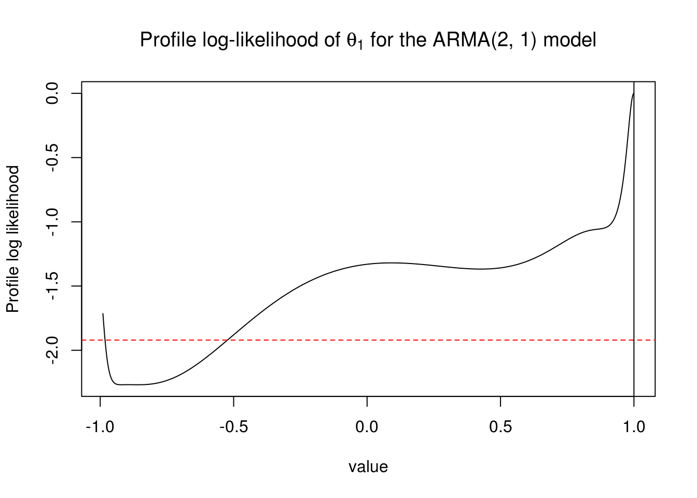
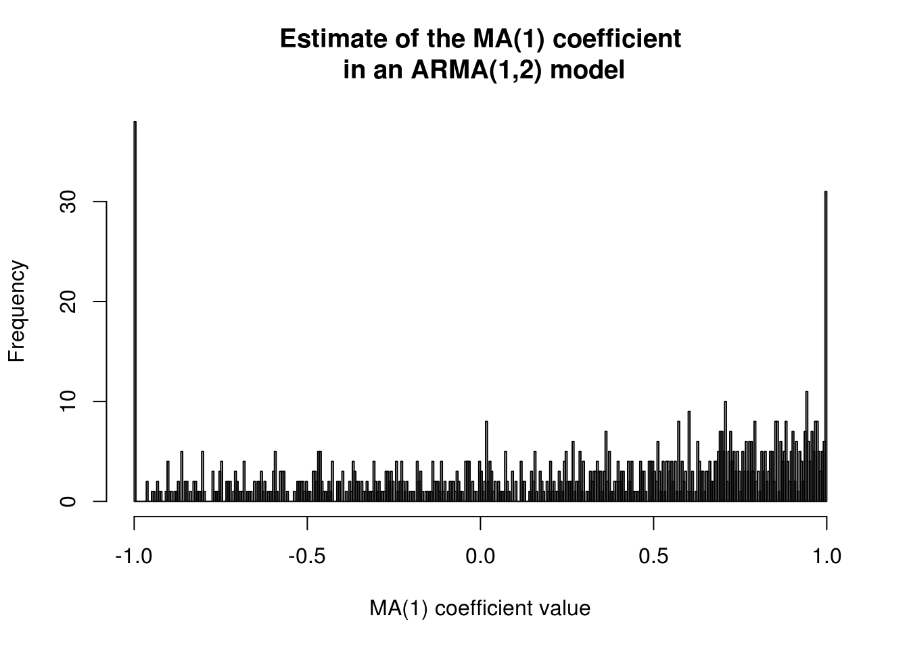

2.3 Information criterion, model selection and profile likelihood
The following example is due to Edward Ionides and is licensed under CC-BY-NC.
We analyze data from NOAA, the depth of Lake Huron (in m). There is a decreasing trend. We first format the time variable and extract the height in January.
library(lubridate)
# Data from
# http://www.glerl.noaa.gov/data/dashboard/data/levels/mGauge/miHuronMog.csv
dat <- read.csv("http://sma.epfl.ch/~lbelzile/math342/huron_depth.csv", sep = ",",
header = TRUE, skip = 2)
dat$Date <- strptime(dat$Date, "%m/%d/%Y")
dat$year <- with(dat, year(Date))
dat$month <- with(dat, month(Date)) #as.numeric(format(dat$Date, format = '%m'))
head(dat) Date Average year month
1 1860-01-01 177.285 1860 1
2 1860-02-01 177.339 1860 2
3 1860-03-01 177.349 1860 3
4 1860-04-01 177.388 1860 4
5 1860-05-01 177.425 1860 5
6 1860-06-01 177.461 1860 6## Subsample values to take only January data
dat <- subset(dat, month == 1)
huron_depth <- dat$Average
year <- dat$year
# Plot the series
plot(huron_depth ~ year, type = "l", ylab = "Lake depth (m)", main = "Monthly Average Master Gauge\nWater Levels (1860-Present)")
Next, we create a table containing the AIC values, which are obtained from fitting successive ARMA models with varying orders \(p\), \(q\). Here, a simple AR(1) does an excellent job at capturing the structure and all other models are essentially more complicated versions.
huron_ar1 <- Arima(huron_depth, order = c(1, 0, 0), include.drift = TRUE, include.mean = TRUE)
## Table of AIC values extracted from the output - notice the warnings on
## your computer when the fit fails!
aic_table <- function(data, P, Q) {
table <- matrix(NA, (P + 1), (Q + 1))
for (p in 0:P) {
for (q in 0:Q) {
table[p + 1, q + 1] <- arima(data, order = c(p, 0, q))$aic
}
}
dimnames(table) <- list(paste("<b> AR", 0:P, "</b>", sep = ""), paste("MA",
0:Q, sep = ""))
table
}
huron_aic_table <- aic_table(huron_depth, 4, 5)
require(knitr)
kable(huron_aic_table, digits = 2)| MA0 | MA1 | MA2 | MA3 | MA4 | MA5 | |
|---|---|---|---|---|---|---|
| AR0 | 166.75 | 46.60 | 7.28 | -14.97 | -18.64 | -26.09 |
| AR1 | -38.00 | -37.41 | -35.46 | -33.82 | -34.13 | -32.20 |
| AR2 | -37.33 | -38.43 | -36.90 | -34.93 | -34.35 | -33.08 |
| AR3 | -35.52 | -35.17 | -32.71 | -31.38 | -31.13 | -32.98 |
| AR4 | -33.94 | -34.91 | -34.43 | -36.27 | -31.31 | -30.90 |
## Kables are tables for HTML. For LaTeX, use something like library(xtable)
## dimnames(huron_aic_table) <- list(paste0('AR', 0:4), paste0('MA', 0:5))
## latex_tab <- xtable::xtable(huron_aic_table, booktabs = TRUE, caption =
## 'AIC values for ARMA models for the Lake Huron dataset') print(latex_tab,
## booktabs = TRUE, caption.placement = 'top')I silenced the output, but some of the optimization routine failed (duh). You can see this by looking at the AIC values (recall the definition and look at nested models). These cannot increase by more than 2 from left to right or top to bottom.
Subsequent quotes are from Prof. Ionides’ notes
What do we learn by interpreting the results in the above table of AIC values? In what ways might we have to be careful not to over-interpret the results of this table?
We can look at the roots to see if the process of our choice (the one with lowest AIC, say) is good. Overly complicated models can lead you to big troubles. We illustrate this by fitting a complex model, an ARMA(2,1), to the series:
## Fit an ARMA(2, 1) model
huron_arma21 <- Arima(huron_depth, order = c(2, 0, 1), include.drift = TRUE,
include.mean = TRUE)
huron_arma21Series: huron_depth
ARIMA(2,0,1) with drift
Coefficients:
ar1 ar2 ma1 intercept drift
-0.0979 0.7464 1.0000 176.8391 -0.0049
s.e. 0.0553 0.0554 0.0244 0.1734 0.0019
sigma^2 estimated as 0.04188: log likelihood=26.89
AIC=-41.78 AICc=-41.22 BIC=-23.52## Root of the Phi polynomial
AR_roots <- polyroot(c(1, -coef(huron_arma21)[grep("^ar", names(huron_arma21$coef))]))
Mod(AR_roots)[1] 1.224905 1.093792The process is causal, but the estimate of the MA coefficient, \(\theta_1\) is on the boundary of the parameter space and numerically indistinguishable from 1.
Let’s investigate a little, using profile methods. The claimed standard error on the MA(1) coefficient, from the Fisher information approach used by
arimais small. We can see if the approximate confidence interval constructed using profile likelihood is in agreement with the approximate confidence interval constructed using the observed Fisher information.
Note that
arimatransforms the model to invertibility. Thus, the estimated value of \(\theta_1\) can only fall in the interval \((−1, 1)\) but can be arbitrarily close to \(−1\) or \(1\).
Recall the definition of profile likelihood: for a parameter of interest \(\boldsymbol{\psi}\) and a partition \(\boldsymbol{\theta}=(\boldsymbol{\psi}, \boldsymbol{\lambda})\), the profile likelihood as a function of \(\boldsymbol{\psi}\) is \[\ell_p(\boldsymbol{\psi}) = \mathrm{argmax}_{\boldsymbol{\lambda} \in \Lambda} \ell(\boldsymbol{\lambda} \mid \boldsymbol{\psi}).\]
The maximum profile likelihood coincides with the maximum likelihood estimate (why?), and we use it normally to obtain more accurate confidence intervals for (a) parameter(s) of interest. Here, we investigate the profile log-likelihood of the MA(1) coefficient. Unlike the nice examples you saw in class, the profile here is weird and the global maximum lies on the boundary.
## Profile log-likelihood for the MA coefficient
K <- 1000
ma1 <- seq(from = -0.99, to = 1, length = K)
profile_loglik <- rep(NA, K)
for (k in 1:K) {
profile_loglik[k] <- logLik(arima(huron_depth, order = c(2, 0, 1), xreg = scale(seq(1:length(huron_depth))),
include.mean = TRUE, fixed = c(NA, NA, ma1[k], NA, NA)))
}
# Failed for some values of the MA
plot(profile_loglik - logLik(huron_arma21) ~ ma1, type = "l", ylab = "Profile log likelihood",
xlab = "value", main = expression(paste("Profile log-likelihood of ", theta[1],
" for the ARMA(2, 1) model")))
abline(h = -qchisq(0.95, 1)/2, col = 2, lty = 2)
abline(v = 1, col = 1)
The “usual” 95% profile confidence interval would thus include zero, so the coefficient is maybe not significant after all. I coded a little function that you can use to find the value at which a profile log-likelihood, here shifted so that the maximum is at zero, intersects with the value of half the \(\chi^2\) quantile.
# mle <- logLik(huron_arma21)[1]
profile_confint <- function(mle, xvals, profile, lev = 0.95) {
K <- length(profile)
ind_max <- which.max(profile) #value corresponding to MLE
val_conf <- mle - qchisq(lev, 1)/2 #Cutoff line
# Find the closest value by linear interpolation, swapping x and y
upper <- profile[(ind_max + 1):K]
lower <- profile[1:ind_max]
up <- suppressWarnings(c(max(which(upper >= val_conf)), min(which(upper <
val_conf))) + ind_max)
low <- suppressWarnings(c(min(which(lower >= val_conf)), max(which(lower <
val_conf))))
# Linear interpolation step with two closest values
if (!any(is.infinite(low))) {
a <- approx(y = ma1[low], x = profile_loglik[low], xout = val_conf[1])$y
} else {
warning("No value of the profile likelihood is below the threshold
for the lower confidence interval")
a <- NA
}
if (!any(is.infinite(up))) {
b <- approx(y = ma1[up], x = profile_loglik[up], xout = val_conf[1])$y
} else {
warning("No value of the profile likelihood is below the threshold
for the upper confidence interval")
b <- NA
}
return(c(a, b))
}
# Profile confidence interval
profile_confint(logLik(huron_arma21)[1], xvals = ma1, profile = profile_loglik,
lev = 0.95)[1] -0.5260204 NAHere, the “usual” 95% confidence interval includes (because of the constraint) all values in (-0.53, 1).
- What do you conclude about the Fisher information confidence interval proposed by
arima?- When do you think the Fisher information confidence interval may be reliable?
- Is this profile likelihood plot, and its statistical interpretation, reliable? How do you support your opinion on this?
Be suspicious of the output and think before acting.
There is in fact a non-zero probability of obtaining a coefficient of \(\pm 1\) for an MA(1). This can be easily seen through a simulation. We see a picture that roughly matches that of the profile likelihood (noting what seems to be convergence to a local maximum at \(\theta=-1\) in many cases).
set.seed(54321)
hist(MAcoefdist <- replicate(n=1000, #perform 1000 replicates
coef(Arima(order=c(2,0,1), #extract ma[1] coef from ARMA(2,1)
arima.sim(n=155, model=list(ar=coef(huron_ar1)["ar1"])),))["ma1"]), #data is 155 obs from AR(1) model
breaks=300, main="Estimate of the MA(1) coefficient\n in an ARMA(1,2) model", xlab="MA(1) coefficient value")
#Proportion of values that lie on the boundary.
mean(I(abs(MAcoefdist)>0.999))[1] 0.069We wish to restrict to causal and invertible processes. The latter implies that the AR(\(\infty\)) representation of the process exists; the latter is used for prediction. However, while unit roots happen rarely, you only get one sample and it may happen in yours. This makes life more complicated because the asymptotics are non-regular for the problem. It is thus best to rely on procedures that only require estimation of the model under the null hypothesis, such as a score test.
2.3.1 Exercise 3: Lake Erie height
- Perform an additive decomposition of the form \[Y_t = m_t + s_t + Z_t\] where \(m_t\) is the trend and \(s_t\) is a seasonal component of the Lake Erie height series, found at http://sma.epfl.ch/~lbelzile/math342/LakeErie.csv. Characterize the stochastic component \(Z_t\) using an ARMA model.
- Obtain a table of AIC and BIC values for ARMA(\(p, q\)) model for order 7 and less. Anything worth of notice?
- Justifying your answer, select an adequate ARMA model. Are the residuals from this model white noise?
- Look at the fitted model and check for invertibility and causality of your solution.
- Plot the (partial) correlogram of \(Z_t\) and superpose the theoretical coefficients implied by your model.
- Plot the correlogram of the residuals of your ARMA model. Do they appear white noise?
- Perform a Ljung-Box test on the residuals. What can you conclude?